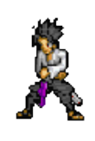
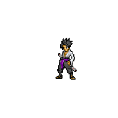

Sasuke
Sasuke é membro do clã Uchiha, que era uma habilidosa família de ninjas da Vila Oculta da Folha.
Seu objetivo inicial é vingar a destruição de seu clã, matando seu irmão Itachi Uchiha, que
assassinou quase todos sozinho. Inicialmente é frio e guiado por sua vingança, mas
posteriormente cria vínculos de amizades com outros personagens, particularmente com Naruto
Uzumaki, quem ele passa a considerar como rival.